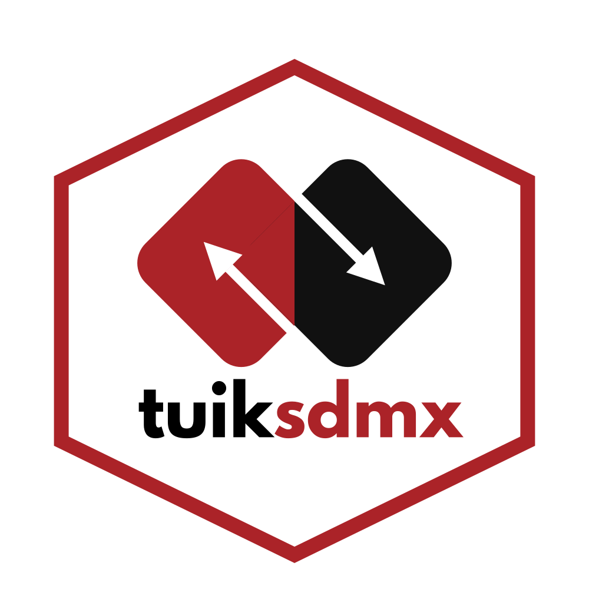

Understanding Dataflows, DSDs and metadata
Source:vignettes/metadata-and-dsd.Rmd
metadata-and-dsd.RmdPurpose
tuiksdmx is a structure-aware client
for the authenticated TÜİK SDMX service. Before filtering observations,
it is useful to know which statistical Dataflow is being
queried and which Data Structure Definition (DSD) it uses. This
vignette explains the distinction among Dataflows, DSDs, dimensions,
concepts, Codelists, measures and attributes.
The examples use the CPI Dataflow DF_TUFE_SDMX_TT01,
which was tested during package development. Live identifiers,
descriptions and structural references may change. Nothing in this
document assumes that the package is available from CRAN.
Authentication
The service requires an API key. The recommended persistent setup
uses TUIK_SDMX_API_KEY in the user’s personal
.Renviron, but this is not required: all
authenticated calls shown here can receive api_key = api
where api is a securely obtained character-string key.
Never commit credentials to a repository. See Getting started
for authentication alternatives.
1. Find and inspect a Dataflow
A Dataflow identifies a published statistical dataset and references a DSD. Search descriptions when the ID is not known:
flows <- tuik_search_dataflows("tüketici", limit = 10)
flows
flow <- tuik_get_dataflow("DF_TUFE_SDMX_TT01")
flowUse a reusable profile to combine the Dataflow reference and its DSD structure:
profile <- tuik_flow_profile("DF_TUFE_SDMX_TT01")
names(profile)
profile$dataflowThe returned profile contains dataflow,
dsd, dimensions, measures and
attributes. Reusing this object avoids repeatedly
constructing the same profile; it is not a guarantee about response
times for subsequent data requests.
2. Read the structure without downloading observations
tuik_explore(profile)
tuik_filter_dimensions(profile)The overview distinguishes the following SDMX roles:
| Role | What it describes | How a user works with it |
|---|---|---|
| Series/key dimension | The identity of a statistical series | filters = list(...) |
| Time dimension | The observation’s reference period
(TIME_PERIOD) |
start_period, end_period
|
| Measure | The value being measured, such as
OBS_VALUE
|
Read the returned observation |
| Attribute | Supporting information, such as observation status or units | Interpret alongside data |
For this tested CPI structure, YAYIM_DONEMI is a
series/key dimension; it is not the observation time
dimension TIME_PERIOD. The DSD determines which dimensions
are required and their key order.
3. Distinguish concepts and Codelists
A concept describes what a structural component means. A Codelist defines permissible code values for a coded dimension. Neither guarantees that a value is observed for a particular period.
# Dimension metadata and its referenced Codelist
tuik_filter_dimensions(profile)
# Theoretical codes and descriptions for one dimension
tuik_dimension_codes(profile, "DEGISIM")
# Search a dimension's defined values
tuik_explore(profile, dimension = "COICOP_2018", search = "gıda")The profile already contains the DSD’s dimension and measure metadata:
profile$dimensions
profile$measures
profile$attributesThe lower-level API is available when the DSD identifier, agency and version matter:
# Follow the *actual reference*, rather than guessing a DSD ID.
ref <- profile$dataflow
raw_dsd <- tuik_get_dsd(
dsd_id = ref$dsd_id,
agency = ref$dsd_agency,
version = ref$dsd_version
)
# Extract structural components from the XML document
tuik_dimensions(raw_dsd)
tuik_measures(raw_dsd)
tuik_attributes(raw_dsd)For direct inspection of a Codelist, take its agency, identifier and
version from tuik_filter_dimensions(profile) and supply
those values to tuik_get_codelist(). Likewise,
tuik_get_concept_scheme() requires the actual ConceptScheme
reference (including agency); do not assume that a concept ID is itself
a ConceptScheme ID.
4. Examine candidate filters
chosen <- list(REF_AREA = "TR", FREQ = "M", DEGISIM = "1")
tuik_explore(profile, filters = chosen)
tuik_missing_filters(profile, chosen)tuik_explore(..., filters = ...) reports selected and
missing key dimensions. It does not
check whether selected codes occur in Codelists or in actual
observations. Use tuik_validate_filters() for Codelist
membership:
tuik_validate_filters(profile, chosen)For observations in a particular time window, see Observed availability. A valid Codelist code may have no data in that window.
5. Reproducibility and metadata changes
For a reproducible analysis, record the Dataflow ID, applicable
agency/version, observation period, all filters, and the retrieval date.
If stable structure is important, construct the profile with an
explicitly selected version when supported by the service, rather than
always relying on "latest".
Do not assume that Codelist domains equal observed values. Also distinguish the cost of metadata requests from the potentially much larger cost of downloading observations. The next vignette, Filtering and performance, explains the relevant safeguards.